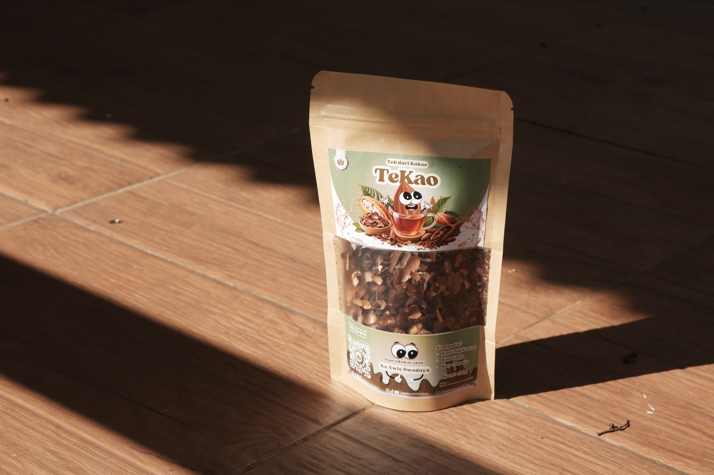
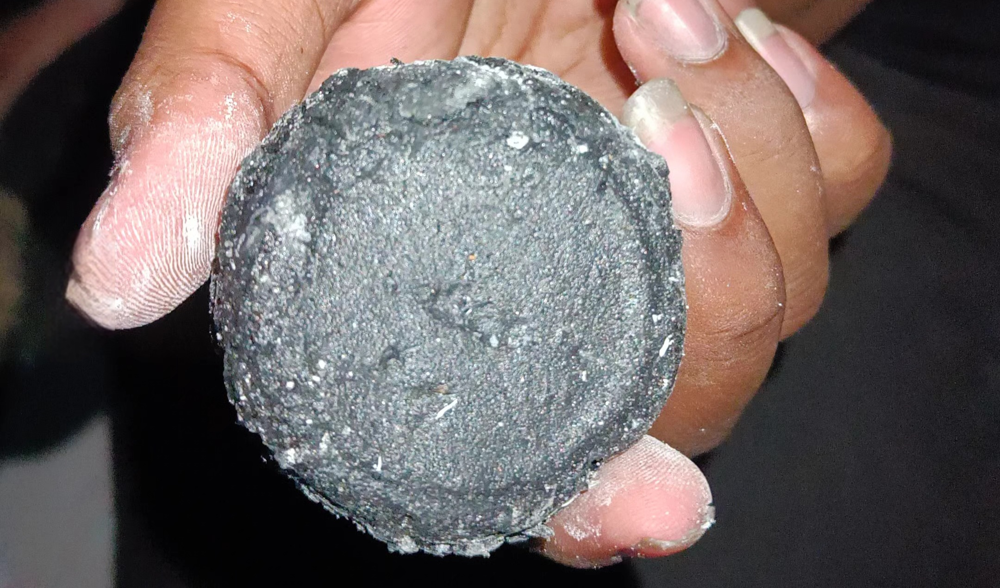

Awis Paste
Pasta cokelat premium hasil olahan biji kakao pilihan dengan tekstur kental dan lembut.
KO AWIS menghadirkan karya nyata, merancang kurikulum terapan, dan membangun ekosistem komprehensif untuk mengangkat potensi kakao di Desa Ngawis.
Capaian utama program PPK Ormawa CENTRIS FTI UII.
Dokumentasi menyeluruh perjalanan program — mulai dari capaian kegiatan, laporan keuangan, hingga berita acara serah terima sebagai bentuk transparansi dan akuntabilitas program KO AWIS.


Seluruh kegiatan program KO AWIS didokumentasikan dan dibagikan secara terbuka melalui Instagram, TikTok, YouTube, dan LinkedIn sebagai ruang berbagi praktik baik kepada publik.
Buku Refleksi berjudul “KO AWIS: Pojok Literasi Terpadu di Desa Ngawis”. Buku ini membahas mengenai overview dan perkembangan program pojok literasi terpadu yang meliputi perkembangan hard skill dan soft skill, capaian output dan outcome, capaian hasil dan praktik baik, serta evaluasi pelaksanaan program.


Sebuah film dokumenter yang merekam perjalanan KO AWIS — dari profil Desa Ngawis, mekanisme program, hingga peran nyata masing-masing anggota CENTRIS dalam pemberdayaan masyarakat. Dapat ditonton secara publik di YouTube.
Hasil program KO AWIS disebarluaskan melalui poster dan brosur — menjangkau lingkungan kampus, organisasi mahasiswa, hingga masyarakat luas sebagai bentuk diseminasi program.

Inovasi teknologi dan produk olahan fisik untuk mendukung ekosistem Desa Ngawis.
Mesin penggiling yang dirancang khusus untuk menghaluskan biji kakao sangrai menjadi pasta kakao. Alat ini mempercepat proses produksi dengan hasil gilingan yang higienis, halus, dan konsisten bagi masyarakat Desa Ngawis.


Teknologi untuk mengekstraksi lemak (minyak) dari pasta kakao. Alat ini berfungsi untuk memisahkan lemak murni dengan bungkil kakao, di mana bungkil tersebut nantinya akan dihaluskan kembali menjadi produk bernilai jual tinggi yaitu bubuk cokelat murni.
 Produk Pangan
Produk Pangan
Pasta cokelat premium hasil olahan biji kakao pilihan dengan tekstur kental dan lembut.

Produk PanganMinuman teh herbal kaya antioksidan yang memanfaatkan limbah kulit biji kakao.
 Produk Pangan
Produk Pangan
Cokelat batang lezat dengan persentase kakao asli Desa Ngawis bermutu tinggi.
 Produk Pangan
Produk Pangan
Bubuk cokelat murni tanpa pengawet yang cocok untuk aneka minuman dan kue.

Non-PanganBahan bakar alternatif ramah lingkungan yang diproses dari limbah kulit kakao.
 Non-Pangan
Non-Pangan
Suplemen pakan ternak padat gizi yang memanfaatkan produk sampingan kakao.
 Produk Pangan
Produk Pangan
Keripik pisang renyah berbalut lumeran cokelat khas KO AWIS yang gurih manis.
 Produk Pangan
Produk Pangan
Keripik singkong lokal yang dipadukan dengan kelezatan cokelat otentik Desa Ngawis.